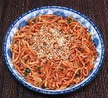

|
Crisp & Spicy Radish SaladKorea - Mu-Saengchae | ||||
| Makes: Effort: Sched: DoAhead: |
2-1/2 cups ** 30 min Yes |
A very fine crunchy salad with adjustable chili heat. It can also be used as a Banchan (tiny side dish). | |||
|
1 1/2 2 1 1-1/2 2-1/2 2 ------- 1 |
# T cl T T T --- t |
Radish (1) Salt Garlic Scallion Chili Flake (2) Fish Sauce (3) Sesame Oil, dark -- Garnish Sesame Seeds (4) |
Make - (45 min (with salting) - 25 min work)
|